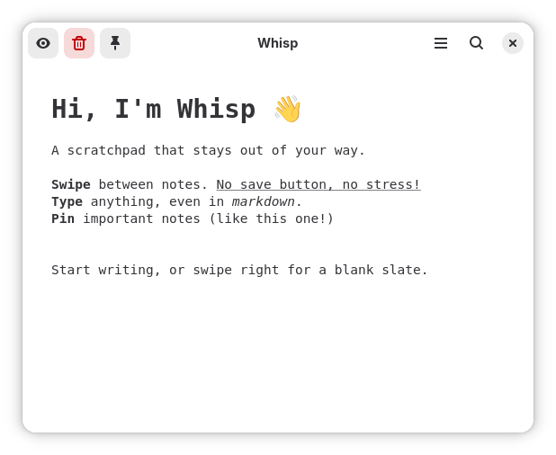
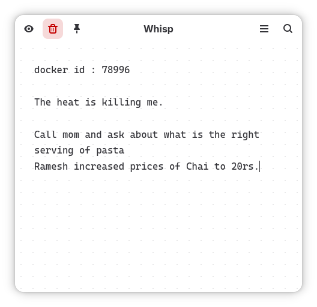
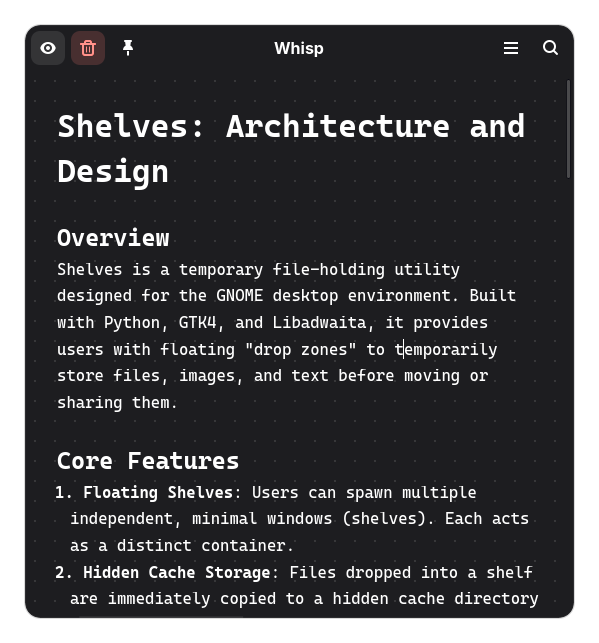
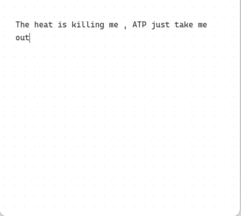
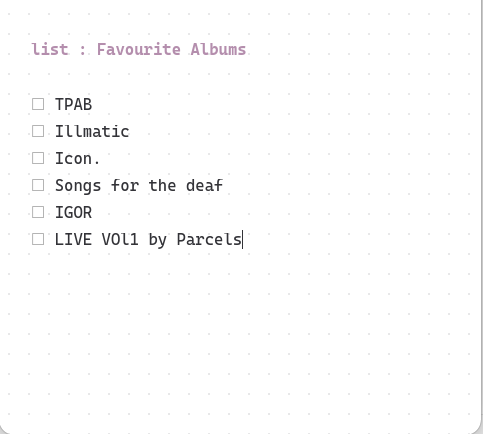
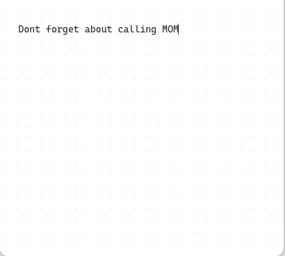
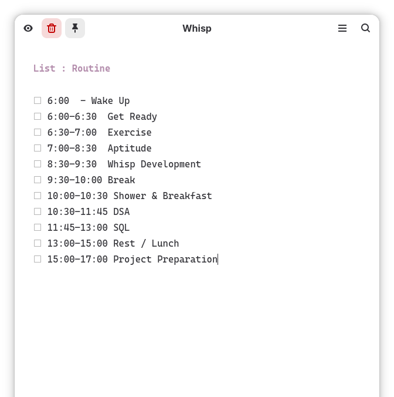

The Anti-Note for GNOME.
A fluid, gesture-driven scratchpad designed for absolute speed.

Why Whisp?
Most apps like Notion or Obsidian force heavy workflows of managing files, folders, and saving. Whisp is different.
Zero Friction
No titles to type, no files to name, and no folders to manage. Just open the app and start typing instantly.
Spatial Navigation
Instead of a messy sidebar, your notes exist in a swipeable carousel. A quick swipe glides you to your next thought.
The "Anti-Note"
Use it as a true scratchpad. Paste temporary links, jot down quick thoughts, and when done, hit Ctrl+D to delete it forever.
Core Features

WYSIWYG Mode
Toggle WYSIWYG mode to instantly render your markdown beautifully.

Intentionally simple
Whisp is an anti-note. We reject infinite databases and complex tagging. Some thoughts are meant to be fleeting and messy. A perfect temporary scratchpad.
Friction Less Navigation
Swipe horizontally to instantly switch between notes. Fluid and friction-less.



Checklists
Type List : to automatically transform your note into a seamless checklist. Perfect for quick tasks, daily routines, and rapid mental dumps.

Built for power users.
Custom Font. Write in your preferred style with complete typeface customization.
Custom Line Spacing. Adjust line heights for perfect readability and visual density.
Paper themes. Switch seamlessly between grid, lined, or blank paper backgrounds.
Startup behaviour. Choose whether to start fresh with a blank note or restore your previous session.
Quick launch shortcut. Summon Whisp instantly from anywhere using a customizable global hotkey.
Auto Archiving. Automatically clean up inactive notes after 1 month, 1 year, or never.
Custom carousel Size. Adjust the physical width of your note carousel to fit your exact workflow.
Pin important notes. Pin your most crucial notes so they always stay visible at the front.
Keyboard Shortcuts. Keep your hands on the keys with dedicated shortcuts for pinning and navigating.
Loved on Linux.
Reached 2500+ Downloads under 2 weeks on Flathub.
One of my favorite apps
man, I've been using the app since the day you posted this, now is one of my favorite and most used apps. do you have ko-fi profile? i would like to support your effort
Exactly what I was looking for
I just downloaded it. Discovered it through the flathub frontpage. It's exactly what I was looking for. It looks super cool and works perfectly.
Absolutely amazing!
This is absolutely amazing! Antinote has been one of my favorite mac apps, thank you so much!
Way more useful
This is way more useful than Buffer is to me! Thank you. Just installed on 3 of my machines.
Perfection for my workflow
Whisp + Planify is just perfection for my workflow
Very fast and easy to understand
Love this! Very fast and easy to understand. Congratulations Baajji !!!